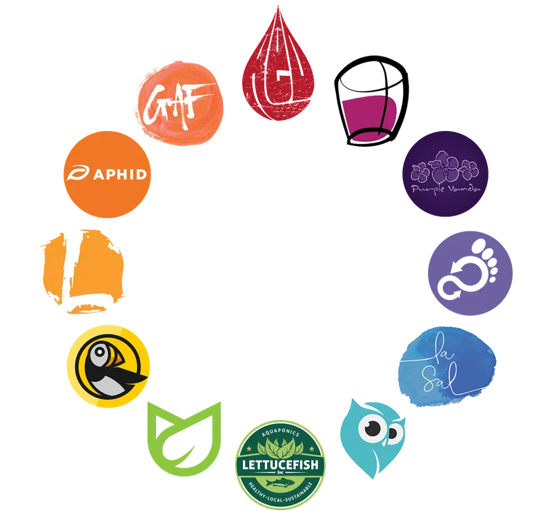
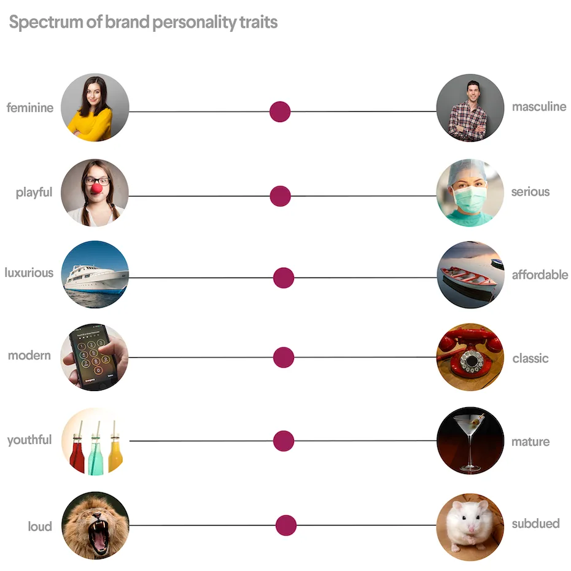

Understanding Color Psychology and Color Theory for Effective Branding Strategies
Color is a vital element in branding that can evoke emotions, convey messages, and create brand recognition. It’s essential to select the right colors that align with your brand values and appeal to your target audience. In this article, we’ll explore the power of branding colors and provide you with actionable tips on how to choose the right colors for your brand.
Why Are Branding Colors Important?

Colors play a significant role in influencing human behavior and perception. Studies have shown that color can affect people’s emotions, behavior, and decision-making. For example, blue is associated with trust and reliability, while yellow is linked with happiness and optimism. In branding, colors can help create a brand personality, differentiate from competitors, and establish brand recognition.
How to Choose the Right Branding Colors?

Choosing the right branding colors requires careful consideration and planning. Here are some additional tips to help you make the right choice:
- Understand Color Psychology
Before you begin the process of selecting your branding colors, it’s essential to understand color psychology. Different colors can evoke different emotions and associations in people, so it’s crucial to select colors that align with your brand values and messaging.
For example, red is associated with passion and excitement, while green is associated with growth and harmony. By understanding the psychology behind colors, you can choose colors that not only look visually appealing but also resonate with your target audience.
- Consider Color Combinations
While selecting a single color for your branding is important, you should also consider color combinations. Different colors can work together to create a cohesive and memorable brand identity.
One common approach to color combinations is to choose a primary color and one or two secondary colors. For example, Coca-Cola’s branding uses red as its primary color, with white and black as secondary colors. This combination creates a bold and recognizable brand identity that stands out from competitors.
- Choose Colors That Reflect Your Brand Personality
Your branding colors should align with your brand personality and values. Consider the tone and voice of your brand, as well as the emotions you want to evoke in your target audience.
If you’re a luxury brand that values elegance and sophistication, you may choose colors such as gold or silver. In contrast, if you’re a fun and playful brand that appeals to young audiences, you may opt for brighter and more vibrant colors.
- Test Your Colors Across Different Media
Once you have selected your branding colors, it’s essential to test them across different media and platforms. Your colors should look consistent and appealing across print, digital, and social media channels.
Testing your colors can also help you identify any issues with color accuracy or visibility. For example, certain shades of blue may look different on a computer screen than they do in print. By testing your colors, you can ensure that your brand identity remains consistent and recognizable across all platforms.
Choosing the Right Colors for Your Brand
To choose the best branding colors for your business, there are several key considerations to keep in mind. One of the most important is your target audience. Understanding the age, gender, and values of your target audience is crucial in determining which colors will resonate most strongly with them. For example, bright and bold colors may be ideal for a brand targeting young, energetic consumers, while more subdued colors may be better suited for a brand targeting older, more sophisticated audiences.
Color Combinations and Color Wheel
Another crucial aspect to consider is color psychology. Each color has its own unique psychological impact on individuals. For instance, blue is often associated with trustworthiness and professionalism, while red is associated with excitement and urgency. By understanding the psychological impact of colors, you can choose branding colors that align with your brand’s values and messaging
The Importance of Consistency
Once you have chosen your branding colors, it is important to ensure consistency across all marketing channels. This includes your website, social media profiles, and physical marketing materials. Consistency helps to build a strong and recognizable brand identity, making it easier for consumers to recognize and remember your brand.
Conclusion
Colors are a powerful tool in branding, and businesses can use them to evoke emotions, convey values, and create a memorable brand identity. By choosing the right colors, considering color combinations, and maintaining consistency, businesses can create a strong brand identity that resonates with their target audience.
References: